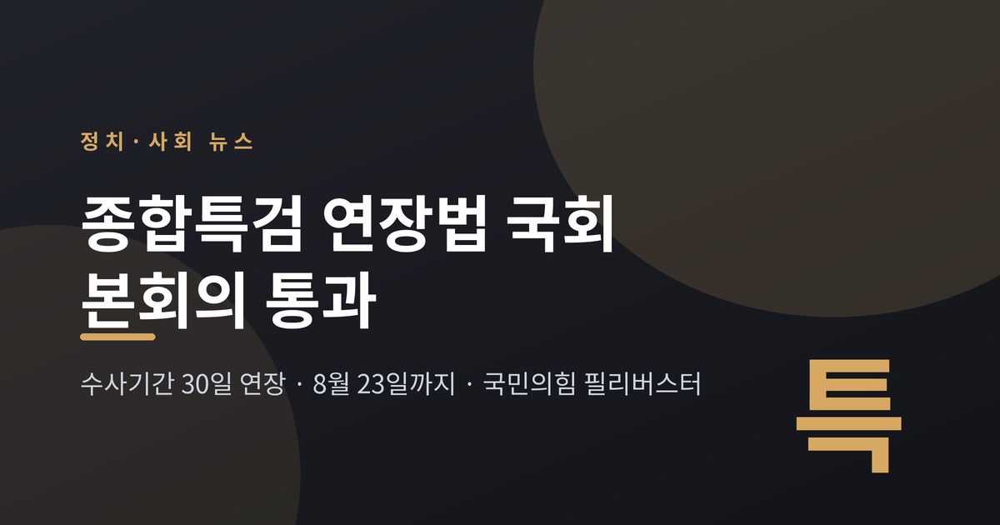
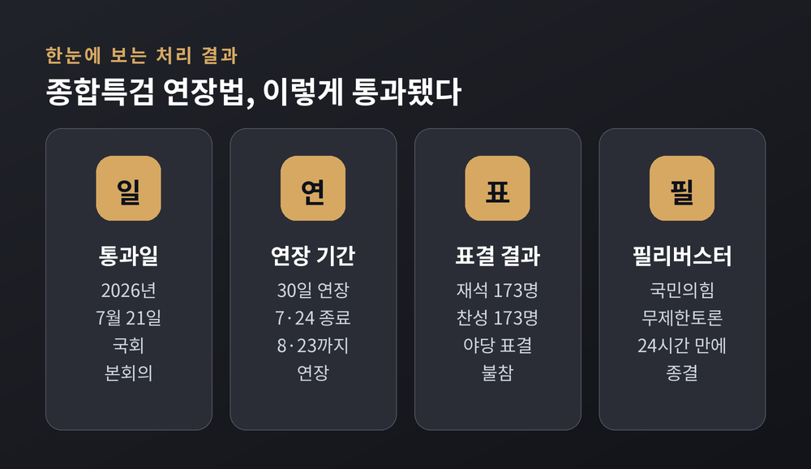
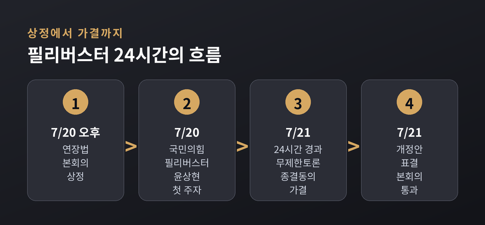
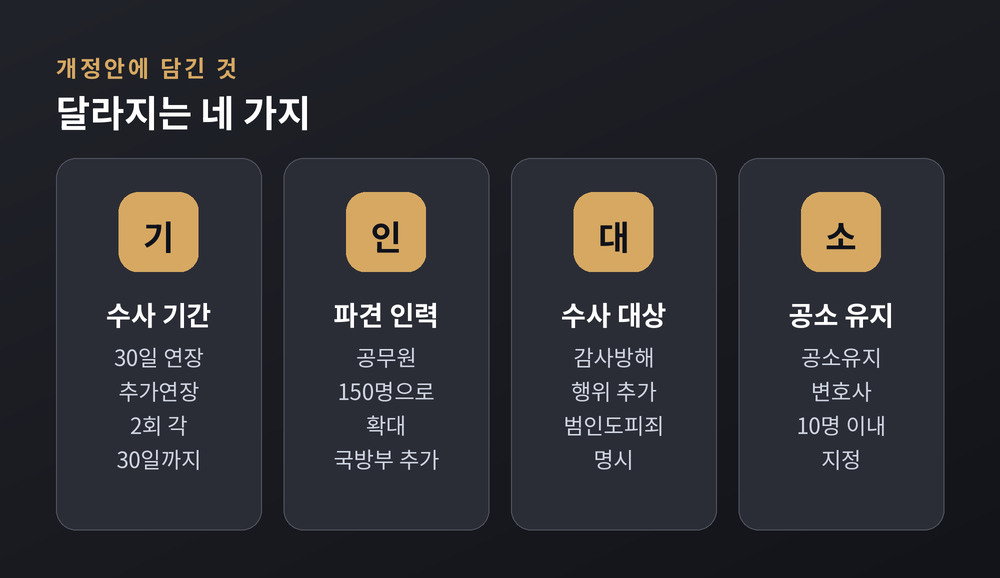
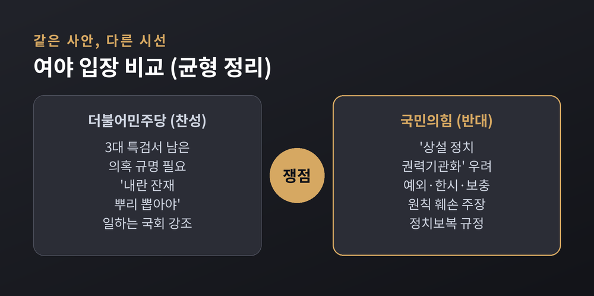
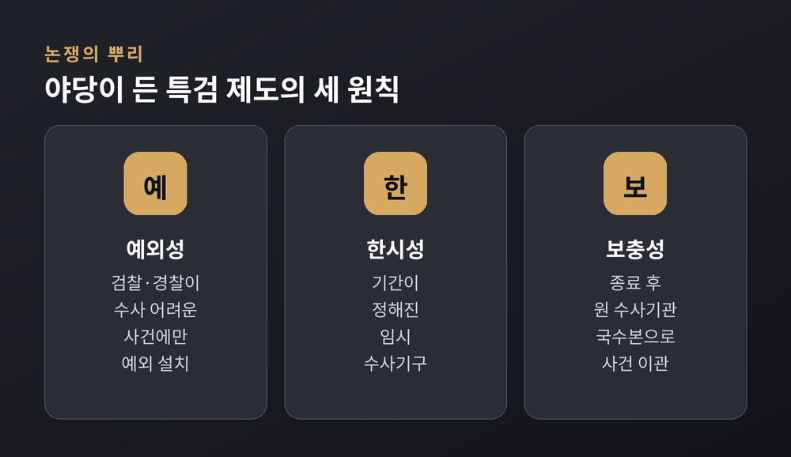
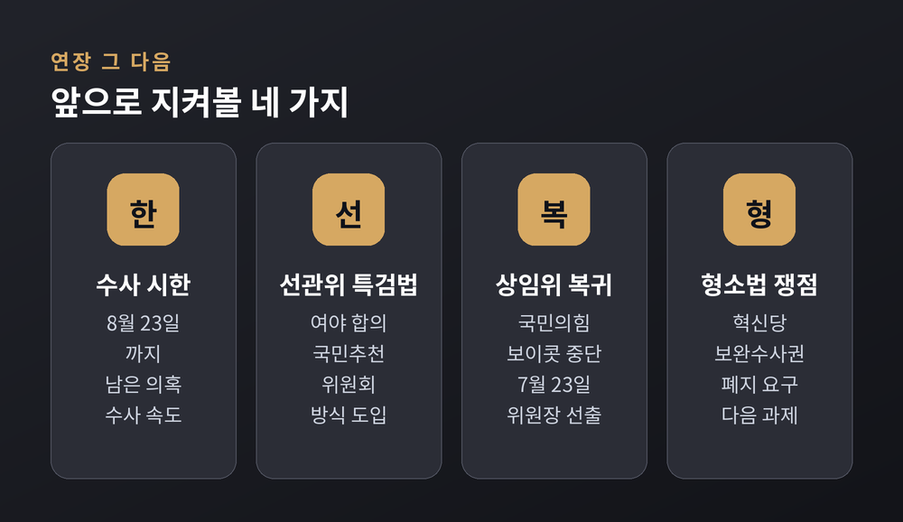

이번 글에서는 2026년 7월 종합특검 수사기간 연장법이 국회를 통과한 과정을 정리해 보겠습니다. 무엇이 결정됐고, 국민의힘은 왜 필리버스터로 맞섰으며, 여야가 각각 어떤 논리를 폈는지 어느 한쪽에 치우치지 않고 짚어 드리겠습니다.
먼저 결론부터 요약하면 이렇습니다. 2차 종합특검의 수사 기간을 30일 연장하는 특검법 개정안이 7월 21일 국회 본회의를 통과했습니다. 국민의힘은 무제한 토론으로 반대했지만 24시간 만에 종결됐고, 수사 시한은 7월 24일에서 8월 23일로 늘어났습니다.

7월 20일 오후, 국회 본회의에 특검법 개정안 하나가 상정됐습니다.
정식 명칭은 '윤석열·김건희에 의한 내란·외환 및 국정농단 행위의 진상규명을 위한 특별검사 임명 등에 관한 법률' 개정안입니다. 흔히 '2차 종합특검 연장법'으로 불립니다.
더불어민주당 등 범여권이 상정을 주도했습니다. 국민의힘은 곧바로 필리버스터, 즉 무제한 토론을 신청했습니다. 첫 주자로는 윤상현 의원이 나서 약 세 시간 동안 반대 입장을 폈습니다.
토론은 하루를 넘겨 이어졌습니다. 국회법은 재적의원 5분의 3, 곧 180명 이상이 찬성하면 개시 24시간 뒤 무제한 토론을 강제로 끝낼 수 있도록 정하고 있습니다. 민주당은 이 조항에 따라 21일 오후 토론을 종결했습니다.
숫자를 나눠 보겠습니다. 필리버스터 종결 동의의 건은 총 투표 183표 가운데 찬성 183표로 가결됐습니다. 곧이어 진행된 개정안 표결은 재석 173명 중 찬성 173명으로 통과됐습니다. 국민의힘 등 야당 의원들은 이 표결에 참여하지 않았습니다.

이번 개정안의 핵심은 수사 기간 연장입니다.
당초 종합특검은 7월 24일 수사를 마칠 예정이었습니다. 개정안이 통과되면서 이 시한이 8월 23일까지 30일 늘어났습니다.
연장 요건도 손봤습니다. 대통령 승인을 받아 추가로 연장할 수 있는 기간을 기존 '1회 30일'에서 '2회 각 30일'로 확대했습니다. 최장 60일을 더 수사할 수 있는 길이 열린 셈입니다.
조직과 권한도 넓어졌습니다. 파견 공무원 상한은 현행 130명에서 150명으로 늘었고, 파견을 요청할 수 있는 기관에 국방부가 새로 들어갔습니다. 공무원이 직권남용이나 직무유기 등으로 감사를 방해하는 행위가 수사 대상에 추가됐고, 관련 사건 범위에 범인도피죄가 명시됐습니다.
공소 유지 체계도 보강했습니다. 법조 경력 5년 이상 특별수사관 가운데 10명 이내를 공소유지 변호사로 지정할 수 있게 했고, 파견 군검사도 공소를 유지할 수 있도록 했습니다.

종합특검은 2026년 2월 출범했습니다.
수사 기간은 180일이었고, 다루는 범위가 역대 특검 가운데 가장 넓어 '매머드급'이라는 평가를 받았습니다. 앞선 3대 특검, 곧 내란·김건희·채상병 특검이 다뤘지만 결론에 이르지 못한 사건과, 그동안 특검 범위 밖에 있던 추가 의혹을 다시 들여다보는 구조입니다.
수사 대상은 광범위합니다. 군과 국가정보원 관계자의 내란 가담 의혹, 검찰의 도이치모터스 사건 수사 무마 의혹, 양평고속도로 노선 변경 의혹, 통일교 관련 수사 무마 의혹 등이 거론됩니다.
이렇게 무게가 큰 수사이다 보니, 기간을 더 줄지 말지가 곧바로 정치적 쟁점이 됐습니다. 종합특검은 이미 기존 법에 따라 수사 기간을 두 차례 연장한 바 있습니다. 이번이 세 번째 연장 시도였던 셈입니다.
같은 사안을 두고 두 진영의 셈법은 정반대였습니다.
먼저 여당인 더불어민주당의 논리입니다. 3대 특검에서 진상이 모두 규명되지 않은 의혹이 남아 있어 시간이 더 필요하다는 것입니다. 민주당은 "내란의 잔재를 확실히 뿌리 뽑아야 한다"며 연장의 정당성을 강조했습니다. 한병도 원내대표는 "이번 주부터 일하는 국회"라며 처리를 미룰 수 없다는 뜻을 밝혔습니다.
반대편 국민의힘의 논리는 이렇습니다. 필리버스터 첫 주자였던 윤상현 의원은 개정안을 "특검을 한시적 예외기구가 아니라 상설 정치 권력기관으로 만들려는 시도"라고 규정했습니다. 특검 제도의 핵심 원칙으로 예외성·한시성·보충성 세 가지를 들며, 이번 개정안이 이 원칙을 허문다고 주장했습니다.
윤 의원은 전례 문제도 제기했습니다. "1999년 특검제 도입 이후 진행 중인 특검의 수사 기간을 법 개정으로 연장한 전례는 없다"는 것입니다. 노무현 정부의 대북송금 특검도, 박근혜 정부의 국정농단 특검도 연장 없이 종료된 뒤 검찰이 후속 수사를 맡았다는 설명입니다. 현행법에도 특검 종료 후 국가수사본부가 사건을 넘겨받도록 돼 있는 만큼, 연장이 필요하다는 논리는 성립하지 않는다고 봤습니다.
국민의힘은 절차와 성과도 문제 삼았습니다. 활동 기간을 두 번이나 늘렸는데도 뚜렷한 성과가 없고, 원 구성조차 마무리되지 않은 상태에서 여당이 처리를 밀어붙였다는 비판입니다. 당 수석대변인은 "사실상 상설 정치수사기관을 만드는 것"이라고 논평했습니다.
한쪽은 "남은 진실을 끝까지 밝혀야 한다"고 말하고, 다른 쪽은 "임시기구를 상시기구로 바꾸는 무리한 연장"이라고 맞섭니다. 어느 주장이 옳은지는 독자마다 판단이 다를 수 있습니다.

이번 논쟁의 밑바탕에는 특검 제도를 보는 시각차가 놓여 있습니다.
야당이 든 예외성·한시성·보충성은, 특검이 검찰과 경찰이 손대기 어려운 사건에 한해 한시적으로 설치되는 임시 수사기구라는 전통적 이해에서 나옵니다. 수사가 끝나면 원래 수사기관으로 사건을 넘긴다는 것이 그 연장선입니다.
반면 여당은 사안의 중대성과 미완의 진상규명을 앞세워, 필요한 만큼 기간을 늘리는 것이 오히려 책임 있는 태도라고 봅니다.

본회의장에서의 충돌과 달리, 대치 국면은 조금씩 풀리는 흐름도 함께 나타났습니다.
같은 날 민주당 한병도 원내대표와 국민의힘 정점식 원내대표는 회동을 갖고, 6·3 지방선거 투표용지 부족 사태를 규명할 '선관위 특검법' 추진에 합의했습니다. 특검 추천은 여야가 각각 3명씩 참여하는 '국민추천위원회' 방식으로 정했습니다.
국민의힘은 원 구성 협상 불발로 이어오던 상임위 보이콧도 멈추기로 했습니다. 자당 몫으로 남은 7개 상임위원장을 받아들여 7월 23일 선출을 마치기로 한 것입니다. 다만 법제사법위원회를 민주당이 가져간 데 대해서는 여전히 강한 거부 입장을 밝혔습니다.
변수도 남아 있습니다. 조국혁신당은 검찰 보완수사권 완전 폐지를 담은 형사소송법 개정을 요구하며 한때 필리버스터 종결에 협조하지 않겠다고 압박했습니다. 결국 원내대표 회동을 거쳐 협조로 돌아섰지만, 형사소송법 개정 문제는 다음 쟁점으로 넘어간 상태입니다.
연장된 시한인 8월 23일까지, 종합특검은 김건희 여사 관련 의혹 등 남은 수사에 속도를 낼 전망입니다.

정리하면 이렇습니다. 이번 사안은 특검의 기간을 늘리느냐 마느냐라는 한 줄 안에, 진상규명의 책임과 수사기구의 한계라는 두 가치가 부딪힌 장면이었습니다.
"임시기구인가, 상시기구인가." 결국 이 물음이 논쟁의 한가운데 있었습니다.
수사 시한이 다시 다가올 때, 우리는 같은 질문 앞에 또 한 번 서게 될지도 모릅니다.